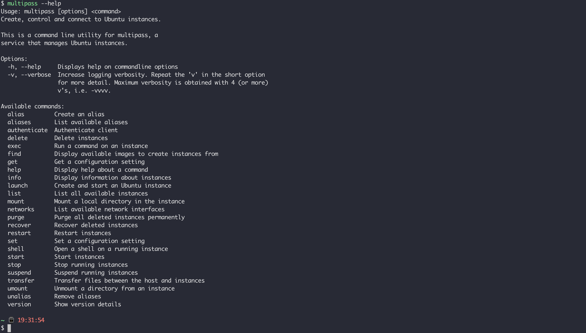
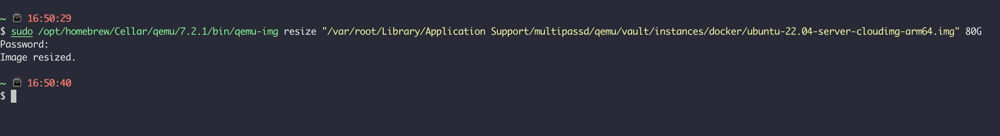

multipass
下载安装之后，本地会有一个 multipass 命令，后续所有的操作都是基于此命令，例如，查看本地帮助：

使用 multipass find 我们可以查看有哪些可供选择的镜像：
1 2 3 4 5 6 7 8 9 10 $ multipass find Image Aliases Version Description 18.04 bionic 20221014 Ubuntu 18.04 LTS 20.04 focal 20221018 Ubuntu 20.04 LTS 22.04 jammy,lts 20221101.1 Ubuntu 22.04 LTS anbox-cloud-appliance latest Anbox Cloud Appliance charm-dev latest A development and testing environment for charmers docker latest A Docker environment with Portainer and related tools jellyfin latest Jellyfin is a Free Software Media System that puts you in control of managing and streaming your media. minikube latest minikube is local Kubernetes
使用 multipass launch 命令能快速启动一个 Ubuntu 虚拟机，如果我们没有指定镜像，会选择 ubuntu 最新的 LTS 版本：
1 2 $ multipass launch --name ubuntu2204 -d 20G Launched: ubuntu2204
使用 multipass list 查看本地正在运行的虚拟机，这里的 primary 是默认的，ubuntu2204 是新创建的：
1 2 3 4 $ multipass list Name State IPv4 Image primary Running 192.168.64.16 Ubuntu 20.04 LTS ubuntu2204 Running 192.168.64.17 Ubuntu 22.04 LTS
使用 multipass mount 命令可以将主机的目录挂载到虚拟机，虚拟机中的路径和挂载路径相同：
1 $ multipass mount /Users/fudenglong/WORKDIR ubuntu2204
使用 multipass shell 进入虚拟机之后，查看我们挂在的目录，如果要切 root，直接使用 sudo su：
1 2 3 4 5 6 7 8 9 10 11 12 13 14 15 16 17 18 19 20 21 $ multipass shell ubuntu2204 Welcome to Ubuntu 22.04.1 LTS (GNU/Linux 5.15.0-52-generic aarch64) * Documentation: https://help.ubuntu.com * Management: https://landscape.canonical.com * Support: https://ubuntu.com/advantage System information as of Sun Nov 13 19:45:42 CST 2022 System load: 0.0 Usage of /: 7.2% of 19.21GB Memory usage: 19% Swap usage: 0% Processes: 93 Users logged in: 0 IPv4 address for enp0s1: 192.168.64.17 IPv6 address for enp0s1: fd88:7848:a9f4:53b8:5054:ff:fe74:a03b 0 updates can be applied immediately. ubuntu@ubuntu2204:~$ sudo su
使用 multipass stop ubuntu2204，multipass delete ubuntu2204 以及 multipass purge 可以彻底删除我们创建的虚拟机。
我们可以在创建虚拟机的时候，可以指定更多的参数，例如，指定 CPU，内存，磁盘，目录挂在以及网路模式：
1 2 3 $ multipass launch -c 4 -d 20G -m 2G -n vm-ubuntu --bridged --mount /Users/fudenglong/WORKDIR:/Workdir Launched: vm-ubuntu Mounted '/Users/fudenglong/WORKDIR' into 'vm-ubuntu:/Workdir'
可以使用 multipass network 查看我们可以使用的网络类型：
1 2 3 4 5 6 7 8 9 10 $ multipass networks Name Type Description bridge0 bridge Network bridge with en1, en2, en3 en0 wifi Wi-Fi en1 thunderbolt Thunderbolt 1 en2 thunderbolt Thunderbolt 2 en3 thunderbolt Thunderbolt 3 en4 ethernet Ethernet Adapter (en4) en5 ethernet Ethernet Adapter (en5) en6 ethernet Ethernet Adapter (en6)
可以使用 multipass info 查看虚拟机的信息：
1 2 3 4 5 6 7 8 9 10 11 12 $ multipass info vm-ubuntu Name: vm-ubuntu State: Running IPv4: 192.168.64.18 Release: Ubuntu 22.04.1 LTS Image hash: c363ebe92173 (Ubuntu 22.04 LTS) Load: 0.00 0.02 0.00 Disk usage: 1.4G out of 19.2G Memory usage: 166.1M out of 1.9G Mounts: /Users/fudenglong/WORKDIR => /Workdir UID map: 501:default GID map: 20:default
虚拟机的磁盘大小在创建的时候就固定了，目前 multipass 没有提供扩容虚拟机磁盘的直接命令，但是总有大神会给出方案，例如这里的：https://github.com/canonical/multipass/issues/62#issuecomment-1093179387 。
但是参考这个方案之前，要查看自己本地的驱动是什么：
multipass get local.driver
然后安装 qemu：
brew install qemu
安装之后，使用下面的命令进行 resize：

新版本可以用下面的命令：
multipass stop ${name}multipass set local.${name}.cpus=4multipass set local.${name}.disk=60Gmultipass set local.${name}.memory=7G
MacOS:
sudo sh "/Library/Application Support/com.canonical.multipass/uninstall.sh"
Rust Aya 开发 eBPF 程序